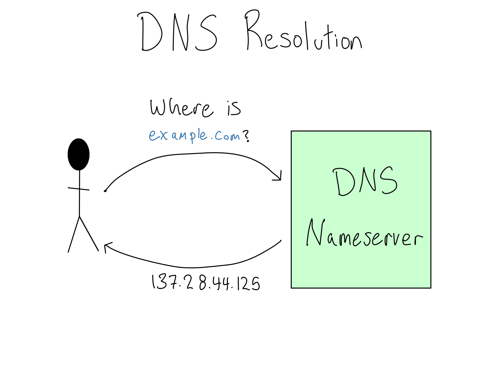

13 DNS is for human-readable addresses
In Chapter 12 you learned that IP Addresses are where a host actually lives on a computer network. But you’ve been using the internet for a long time and you’ve rarely – if ever – used an IP Address. What gives?
The creators of the internet realized that IP Addresses are hard to remember. Even worse, they can change when servers are replaced.
To make the internet a little more human-friendly, the creators of the internet built the domain name system (DNS) that translates between human-readable domains and the IP Addresses where the resources live.
In this chapter, you’ll learn the basics about how DNS works and how it gets configured.1 In the lab, you’ll configure your workbench with an actual domain.
13.1 Basics of DNS and domains
When you create or launch a website, you’ll purchase (rent, really) a domain like \(\text{do4ds.com}\) from a domain name registrar. Purchasing a domain gives you the right to attach that domain to an IP Address.
When someone visits your website or server, their computer resolves the IP Address via a DNS lookup against public DNS nameservers. By purchasing a domain, you register the association between your domain and the IP Address with the DNS nameservers so users can look them up.

A complete domain is called a Fully-Qualified Domain Name (FQDN) and consists of three parts:
\[ \overbrace{\text{blog}}^{\text{Subdomain}}.\overbrace{\underbrace{\text{example}}_{\text{Domain Name}}.\underbrace{\text{com}}_{\text{Top-Level Domain}}}^{\text{Root Domain}} \]
When you get a domain from a registrar, you are actually renting the root domain. You can choose any root domain you want, as long as it’s not already taken. Domain names are unique only within top-level domains, so you might be able to get \(\text{example.fun}\) even if someone else owns \(\text{example.com}\).
When the web first launched, there were only a few top-level domains, such as \(\text{.com}\), \(\text{.org}\), and \(\text{.net}\). ICANN, the group that controls how domains are assigned, controlled them all.
In 2013, ICANN decided to allow people and organizations to register their own top-level domains. That’s why, over the last decade or so, there’s been an explosion in websites at top-level domains like \(\text{.io}\), \(\text{.ai}\), and \(\text{.fun}\).
If you feel, like me, that it would be fun to own a top-level domain, you’ll be sad to learn that it’s not something to do on a whim. In 2012, the initial application fee was $185,000.
Subdomains are a way to specify a part of a domain, usually to signify to users that its for a distinct purpose. You can generally register as many subdomains as you want against a root domain.
13.2 Configuring DNS
DNS is configured by giving the proper IP Address information to the domain name registrar where you bought your domain. There’s often some minor configuration on the server side as well to let the server know where it lives.
The best way to configure DNS is to google how to configure DNS for wherever you’re hosting your website or server, be it EC2 or GitHub Pages or somewhere else. This section is designed to give you a mental model so what you find in your googling makes sense.
There are a variety of domain name registrars. AWS, Azure, and GCP each have their own registrar; there are a number of independent registrars including Namecheap (my personal favorite as it is, indeed, cheap), Cloudflare, and GoDaddy. You can use any registrar to configure a domain irrespective of where the server actually lives.
Costs for domain names vary widely. Buying a meaningless domain in a less popular top-level domain can cost as little as a few dollars per year. For example, I paid only $1.98 for the domain \(\text{do4ds-lab.shop}\) for a year on Namecheap.
On the other hand, buying a \(\text{.com}\) domain that’s a real word or phrase can be thousands of dollars. There are articles every few years about some major company accidentally allowing their domain name to lapse and ransoming it back for ridiculous amounts of money.
Once you’ve purchased your domain, you need to configure the public DNS records of your domain to point to the IP Address you want. Configuration of DNS is done by way of records. Records map a path or host to a target.
Records fall into a number of categories, but there are only a few you’re likely to see:
- A records (or their IPv6 cousin AAAA records) map a domain to an IP Address.
- CNAME records alias subdomains to another record.
- NS records tell the DNS server to forward the request to another namespace server. This is usually only used by big organizations that run their own domain name servers for their subdomains.
When you go to configure DNS with your domain name registrar, you’ll configure the records in a record table. Here’s an imaginary DNS record table for the domain \(\text{example.com}\):
| Path/Host | Type | Target |
|---|---|---|
| \(\text{@}\) | A |
\(\text{64.56.223.5}\) |
| \(\text{www}\) | CNAME |
\(\text{example.com}\) |
| \(\text{blog}\) | A |
\(\text{114.13.56.77}\) |
| \(\text{*}\) | A |
\(\text{64.56.223.5}\) |
The first row provides an A record for the special \(\text{@}\) symbol meaning exact match. By this configuration, any traffic to \(\text{example.com}\) will be passed straight through to the specified IP Address.
The second row deals with traffic to the \(\text{www}\) subdomain. This CNAME record indicates that traffic to \(\text{www.example.com}\) should be treated exactly like traffic to the bare \(\text{example.com}\). Some domain providers do automatic redirection of \(\text{www}\) traffic making this row unnecessary in some configurations.
The next record sends the \(\text{blog}\) subdomain to a completely different IP Address. This is a common configuration when the subdomain might be owned by a completely different group inside the organization or is served from a different server.
The last record uses the wildcard symbol (\(\text{*}\)) to send all subdomain traffic that’s not already spoken for back to the main IP Address.
Other than the \(\text{www}\) subdomain, which stands for world wide web and is generally routed to the same place as the bare root domain, using subdomains and choosing between subdomains and paths is entirely about organizing how users experience your website and what’s easiest for your organization to maintain.
When the internet was first started, it seemed like it might be important to differentiate the \(\text{www}\) subdomain for the website from, for example, the email domain for the organization.
That turned out not really to be the case; now \(\text{www}\) and the bare root domain are usually used interchangeably.
Once you’ve configured your DNS records, you will need to wait an annoyingly long time to see if you did it correctly.
When your computer does a DNS lookup, there are often at least three nameservers involved. First, your computer talks to a resolver, which is a server that keeps track of where the top-level domain nameservers are. Then you’re routed to the nameserver for the top-level domain which routes you to the nameserver for your actual domain. And this whole system is duplicated across geographies for redundancy.
When you configure a DNS record, you configure something called the TTL (time to live). Each nameserver, as well as your browser, caches recent DNS lookups to keep things snappy. The TTL defines how long the DNS cache lasts.
The upshot is that it can take up to 24 hours for DNS changes to propagate because the change won’t be effective until all the caches end across all of the DNS servers as well as in your browser. If you make a DNS change and it’s not working, you have no idea whether you made a mistake or it just hasn’t propagated yet. It’s very annoying.
13.3 Comprehension Questions
- What are the parts of a fully-qualified domain name? How does each of them get created?
- How does your computer find the IP Address for a domain? Why could it sometimes be wrong?
- What are the different kinds of DNS records you’re likely to use?
13.4 Lab: Configuring DNS for your server
In the last lab, we configured the server so that all the services were served off of one single port that redirected to various subpaths.
Now we want to get a real, memorable domain for the server so that you and your users don’t have to remember some random ec2- domain or an IP Address. In this lab, we’ll configure DNS records for our server so it’s available at a real domain.
13.4.1 Step 1: Allocate an Elastic IP
Our EC2 instance got a public IP when it started. We could just use that IP Address, but that address is released every time the server stops and a new one is assigned when it comes back up. This means you’d have to change your DNS record every time you temporarily take your server offline – no good.
Luckily, AWS has a service called Elastic IP which gives you a stable public IP Address that you can move from one instance to another as you wish.
Elastic IPs are free if they’re attached to a running EC2 instance. You pay when they’re not in use to discourage hoarding them.
If you do take your server down for a short time, it’s no big deal. As of this writing, it’s 12 cents per day for a single IP. But do make sure to release the Elastic IP if/when you take your server down permanently.
To set up your Elastic IP, find it in the AWS console and allocate an address. Then you will associate your Elastic IP as the default public IP Address for your instance.
Note that once you make this change, your server will no longer be available at its old IP Address, so you’ll have to SSH in at the new one. If you have SSH terminals open when you make the change, they will break.
Next time you stand up a server, you should start by giving it an Elastic IP so you are immediately using its permanent IP Address. In this book, the order of the labs is designed to promote learning, not the right order to configure things.
13.4.2 Step 2: Buy a domain
You can buy a domain from any of the domain registrars on the web. This won’t be free, but many domains are very cheap.
The easiest place to buy a domain is AWS’s Route53 service, but feel free to use another provider. I usually use Namecheap just because all of the domains I own are there.
13.4.3 Step 3: Configure DNS
Once you’ve got your domain, you need to configure your DNS. You’ll have to create 2 A records; one each for the \(\text{@}\) host and the \(\text{*}\) host pointing to your IP and one for the CNAME at \(\text{www}\) with the value being your bare domain.
Exactly how you configure this will depend on the domain name provider you choose. In NameCheap, you configure this via a table under Advanced DNS, which looks like this.
| Type | Host | Value | TTL |
|---|---|---|---|
A Record |
\(\text{*}\) | \(\text{64.56.223.5}\) | Automatic |
CNAME Record |
\(\text{www}\) | \(\text{do4ds-lab.shop}\) | Automatic |
A Record |
\(\text{@}\) | \(\text{64.56.223.5}\) | Automatic |
I would recommend sticking with the default for TTL.
13.4.4 Step 4: Wait an annoyingly long time
Now you just have to be patient. Unfortunately, DNS takes time to propagate. After a few minutes (or hours?), your server should be reachable at your domain.
If it’s not (yet) reachable, see if an incognito browser works because that sidesteps the browser level of caching. If it doesn’t, wait some more. When you run out of patience, try reconfiguring everything and check if it works.
We still haven’t configured HTTPS, so you’ll need to manually input the URL as \(\text{http://}\), because your browser will otherwise assume it’s HTTPS.
13.4.5 Step 5: Add the Shiny app to your site
Now that the Shiny app is at a stable URL, let’s put it on our site so people can look at our penguin size prediction model. I put the app at the subpath \(\text{/penguins}\), so it’s now at \(\text{http://do4ds-lab.shop/penguins}\).
We’re going to use something called an iFrame, which lets you embed one website inside another. An iFrame is a basic HTML construct and it’s easy to put one in a Quarto site.
Once you change your website to go over HTTPS in the next section, you’ll have to adjust the iFrame URL as well.
In Quarto, you can just add an html block to any document and it will get loaded in automatically. I want the app on the landing page of my site, index.qmd. So I’ve added a block that looks like:
index.qmd
<iframe width="780" height="500" src="http://do4ds-lab.shop/penguins/" title="Penguin Model Explorer"></iframe>This is a very shallow intro to DNS. If you want to go a little deeper, I highly recommend Julia Evans’s zines on a variety of technical topics, including DNS. You can find them at wizardzines.com.↩︎